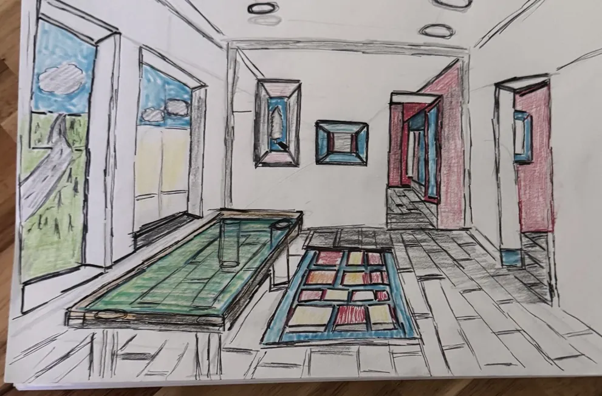

Organizational capability
Establishing governance programs, leadership reporting and cross-functional accountability—not simply inheriting a checklist.
I'm Irvin Thevaranjan. I've built governance capabilities, led teams, and worked with engineering and business leaders to navigate complex technology decisions. Outside my day job, I build tools, write, and tell stories about work and people.
Understand the problem. Challenge the assumptions. Design for the real world. Then find out whether it works.
Different industries. Different systems. The same question: how do we make better decisions when the stakes are real?
A career across SaaS, marketplace technology, banking and consulting: building governance capabilities, leading teams, and independently challenging complex systems.
Focus areas: Engineering and product risk · AI governance · Cloud and cybersecurity · SOX and technology controls · Organizational leadership.
Download professional résumé ↓Manager, Internal Audit – Technology. Independently evaluate cloud, identity, CI/CD, AI-enabled engineering and data-related risks; partner with Engineering, Security and Finance.
Senior Manager, IT & Compliance; North America GRC leadership. Built governance capabilities, managed direct reports and connected risk, security, data and product planning.
Technology Audit Manager. Led technology assurance across Commercial Banking, cloud, cybersecurity, DevSecOps and regulatory remediation.
Technology Risk & Assurance in the U.S. and Australia, including cloud, DevOps, SOX and SOC engagements.
Syracuse University, B.S. · Advanced in AI Audit (AAIA) examination passed, 2026 (not represented as certification awarded).
The through-line in my work is making complexity actionable—not adding governance for its own sake.
Establishing governance programs, leadership reporting and cross-functional accountability—not simply inheriting a checklist.
Understanding how cloud, identity, CI/CD and AI-enabled workflows actually operate, and challenging both proposed changes and existing practices.
Building public prototypes and analytical tools to explore economics, authority, safeguards and decision quality.
I don't want a separate compliance universe. I want to understand the system, find the shared outcome, build workable safeguards, and know whether they actually hold.
Start with how the product, architecture, delivery workflow and people actually operate. What problem are we solving—and what could go wrong?
Data governance cannot begin with a policy alone. First understand what operational data Product needs and why reliability matters to the business.
Two different settings. One underlying principle: risk work must fit how decisions are made, without confusing collaboration with authorization.
My synthesis of experience and public experiments—not a prescribed universal framework. Engineering and management own their systems and decisions; independent assurance evaluates whether the design and evidence justify reliance.
From Minnesota and Syracuse to Singapore, Sydney, Melbourne, and the teams and communities along the way. Select a point—or follow the route—to discover what shaped me.
 Original art accompanies selected chapters. These are my drawings and paintings—not archival travel or workplace photographs.
Original art accompanies selected chapters. These are my drawings and paintings—not archival travel or workplace photographs.
One starting point, many directions. Growing up in Syracuse and spending summers abroad made different places and perspectives part of my everyday story.
A personal timeline, not a geography map. Some moments are grouped for readability; selected dates and impact figures are intentionally broad where the public record has not been reconciled. Explore the links in selected work for the projects themselves.
Independent projects and public work that show how I approach unfamiliar problems, build useful tools, and communicate complex ideas.
Independent public demonstration exploring AI approval authority, engineering safeguards, exceptions and evidence—not a deployed employer system.
Interactive cost-of-assurance scenarios connecting operational effort, automation tradeoffs and evidence quality. Illustrative models, not verified savings.
A player evaluation site combining film, performance context, and role-based scouting to tell a clearer basketball story.
A grassroots talent network and resource hub designed to help former colleagues navigate career transitions together.
I believe good judgment requires more than identifying risks. It means understanding the system, weighing tradeoffs, and asking whether the proposed solution actually makes things better.
A polished solution to the wrong problem is still the wrong solution.
Architecture, incentives, and human decisions matter as much as policies.
Question the new proposal—and whether the status quo deserves defending.
Turn complexity into decisions, experiments, and explanations people can act on.
There isn't a universally correct answer. Try a path and see what becomes important. This fictional scenario illustrates engineering tradeoffs—not a deployed approval system.
The code is ready. The AI assessment is favorable. The team wants faster delivery. What authority would you grant?
Define eligible changes, independently enforced restrictions, approval identity, and a reliable stop condition before allowing automation.
Who controls the eligibility rules—and what happens when the evidence is missing?
Public conversations about engineering, risk, work, career transitions, and people—not all in the same voice, but grounded in the same curiosity.
A published essay from my writing on technology governance and risk.
Read on SubstackA conversation on getting risk into the product backlog, partnering with engineering, and making governance useful in delivery.
Watch the AntiCheckbox episodeStories and conversations about what happens after layoffs—job searches, hiring systems, identity, resilience, and the people behind the numbers.
Explore the podcast introductionA reported story about the grassroots professional network that grew out of a difficult career transition.
Read the featureSelected essays. Article labels below are provisional until their full titles and content can be checked.
Outside my day job, I write, host conversations, and build projects that bring together analysis, storytelling and people.
The Layoff Audit and an independent talent network focus on the human experience of career transitions. My basketball scouting work applies structured analysis to a very different set of decisions.
These interests are not substitutes for my professional experience. They are additional evidence of how I learn, communicate, and turn problems into practical work.
Not everything I make needs a business case.
Painting and drawing give me a different way to experiment—with perspective, light, color, and places I imagine. Here are a few originals from my sketchbooks and canvases.

FROM THE SKETCHBOOK / 001A hallway, drawn by hand. Perspective invites you to see what's beyond the first glance.
Explore the galleryArtwork by Irvin Thevaranjan. Select any piece for a closer look.